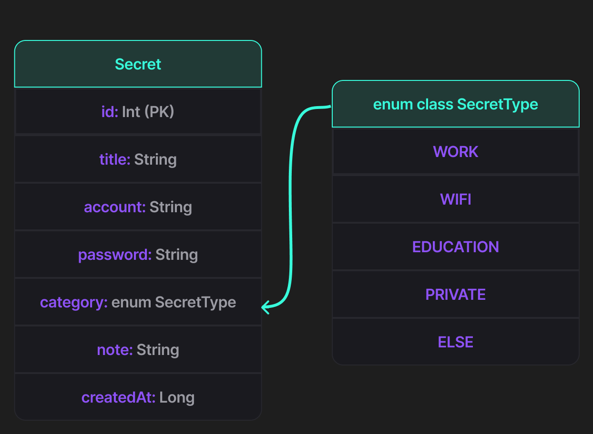

Brief description
NEOKey is an offline-first Android authentication app that securely stores and manages secrets and generated passwords. All sensitive data is encrypted at rest and can be unlocked using biometrics or a master pincode.
An offline-first Android authentication app that securely stores and manages secrets and generated passwords. All sensitive data is encrypted at rest and can be unlocked using biometrics or a master pincode.
What NEOKey is, who it’s for, and how it works.
NEOKey is an offline-first Android authentication app that securely stores and manages secrets and generated passwords. All sensitive data is encrypted at rest and can be unlocked using biometrics or a master pincode.
Provide a fast, simple, and secure way to store and use authentication codes and passwords without requiring internet access, while keeping sensitive data encrypted and protected by biometric unlock and a master pincode.
A user wants to:
Key steps of the flow paired with the corresponding hi-fi screens.
Summative evaluation plan + earlier heuristic/formative findings.
Nielsen’s 10 Usability Heuristics.
| Problem description | Heuristic | Severity |
|---|---|---|
| Create a new password entry using a multi-step wizard without confusion or errors | H1 | 2 |
| Create a new password entry using a multi-step wizard without confusion or errors | H5 | 2 |
| Locate an existing entry using navigation, search, and filters efficiently | H6 | 4 |
| Locate an existing entry using navigation, search, and filters efficiently | H7 | 3 |
| Edit and delete entries, especially irreversible actions | H3 | 2 |
| Edit and delete entries, especially irreversible actions | H5 | 3 |
| Measure perceived usability, confidence, and satisfaction after tasks | H4 | 2 |
| Measure perceived usability, confidence, and satisfaction after tasks | H8 | 1 |
Core functionality is generally usable with low-to-moderate issues. The most severe problems were in information retrieval (H6/H7). Entry creation and data management issues mainly affected feedback clarity and error prevention. Visual design issues were minor.
Evaluate whether NeoKey enables users to manage passwords effectively, efficiently, and with high satisfaction.
Implementation timeline (12.1.2026 → 19.1.2026) + commits.
Entity Relationship Diagram of the local Room/SQLite database. Sensitive columns are stored encrypted at rest.
Public repository containing the full Android implementation, including Room database, encryption logic, UI layers, and version history.
Install the latest build of NEOKey directly on an Android device. (Offline-first • No account required)
Download NEOKey APKTested on Android 10+. You may need to allow installation from unknown sources.